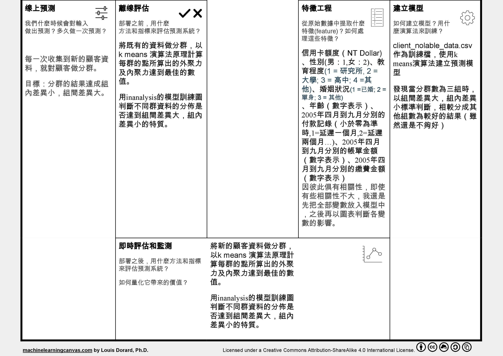
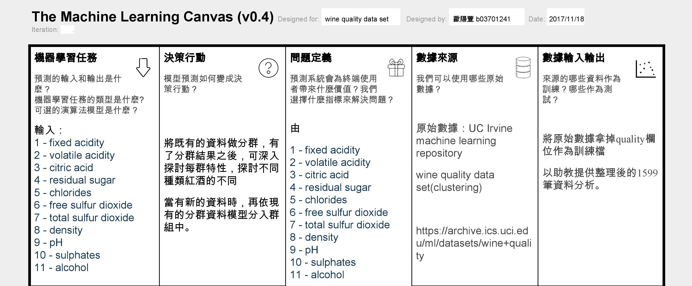
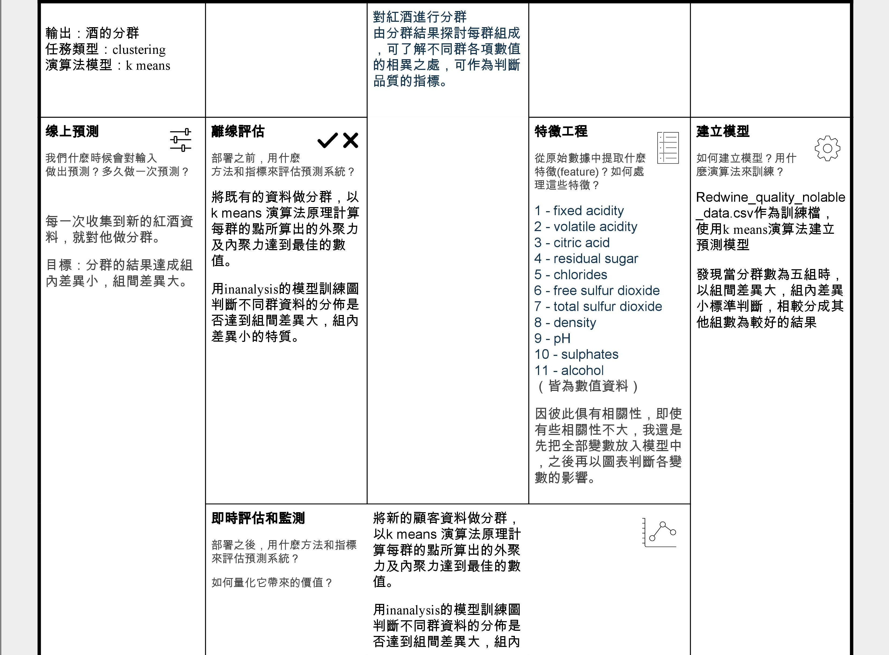
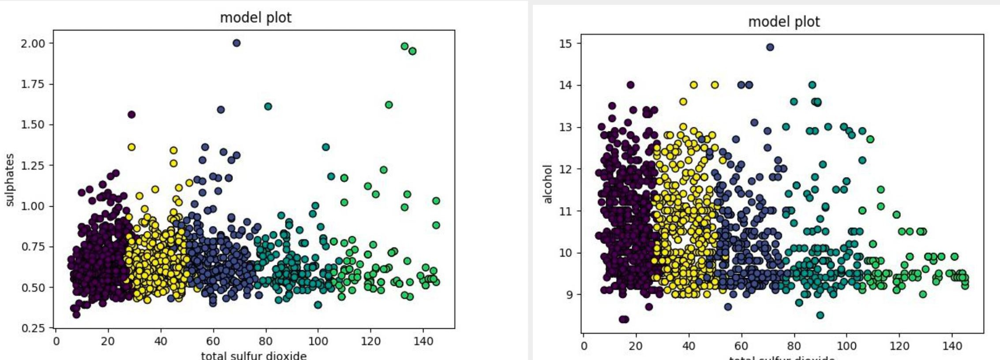
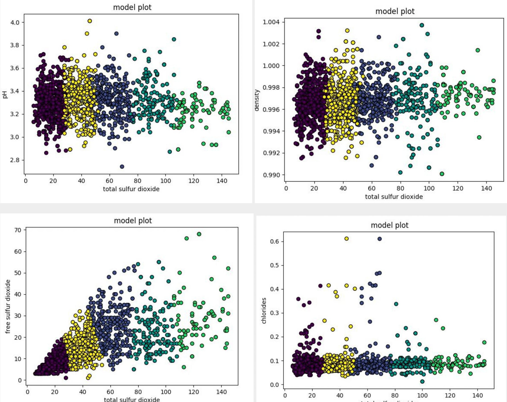
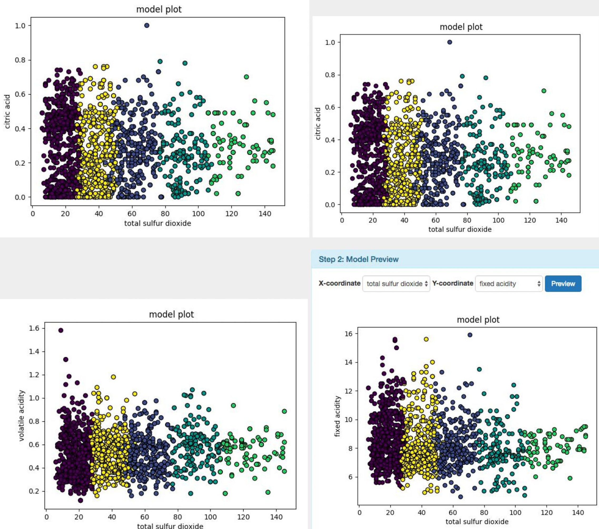
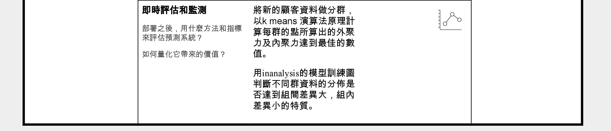
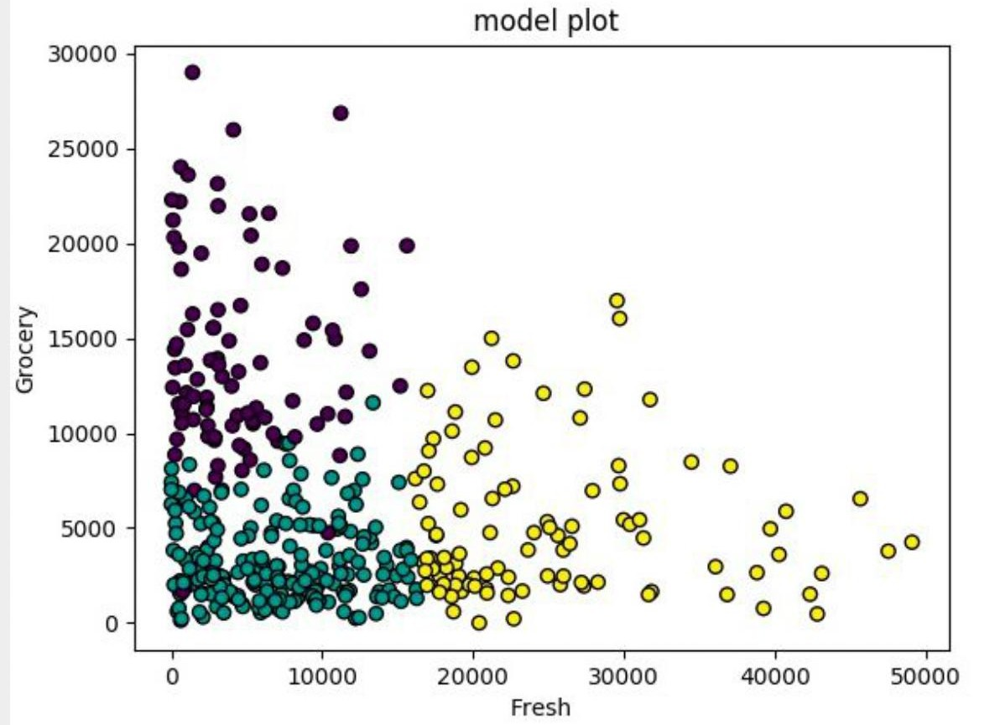

<!-- Post Content -->
<article>
    <div class="container-fluid">
        <div class="row">
            <div class="col-lg-8 col-md-10 mx-auto">
                <a href="review_index.html" class="btn btn-info btn-lg">
                    <span class="glyphicon glyphicon-menu-left"></span>Back to User Reviews List
                </a>
            </div>
        </div>
        <div class="row">
            <div class="col-lg-8 col-md-10 mx-auto">
                <div class="row">
                    <div class="col-lg-4 col-md-4 mx-auto">
                        <section class="main">
                            <ul class="ch-grid">
                                <li>
                                    <a href="review_2.html">
                                        <div class="ch-item ch-img-2">
                                            <div class="ch-info">
                                                <h3>歐陽萱</h3>
                                                <p>臺大工業管理系科管組</p>
                                            </div>
                                        </div>
                                    </a>
                                </li>
                            </ul>
                        </section>
                    </div>
                    <div class="col-lg-8 col-md-8 mx-auto">
                        <h2 class="section-heading">Clustering學習紀錄</h2>
                        <hr>
                        <h3>歐陽萱 | 工業管理系科管組</h3>
                        <p>
                            系統功能多，範例說明容易懂，機器學習初學者也能輕鬆上手!
                        </p>
                    </div>
                </div>
            </div>
        </div>
        <div class="row">
            <div class="col-lg-8 col-md-10 mx-auto">
                <h2 class="section-heading">The Machine Learning Canvas 1</h2>
                <hr>
                
                

                <h2 class="section-heading">Training result</h2>
                <hr>
                <p>從前一步驟（feature selection）看出變數之間的相關係數並不高，所以我先選了所有變數進入下一階段。模型訓練結果只有將x軸設定limit
                    balance（信用額度）變數，y軸設定為bill
                    amount(帳單金額)變數（四月到九月）時，才能看出不同顏色的點之間有明顯的區塊分佈，因此可知此份資料進行分群，limit balance 與bill
                    amount兩遍數影響較大。然而無論使用k
                    means法設定成分成三組、四組、或是更多組，由組之內的分散程度高及不同組之間靠的很近（邊界模糊），可判斷結果都不理想。上排的圖為x軸為limit balance ,y軸為bill
                    amount1的模型圖，因為x軸不變,y軸換成bill amount
                    2~6結果類似，所以以一張圖代表。左邊為分成三組的圖，右邊為分成四組的圖，若以分成三組的圖分析，可知左下為低信用卡額度，因此消費金額也低的族群，綠色為信用卡額度偏高，刷卡金額超過信用卡額度一半以上的族群，黃色為信用卡額度偏高，但刷卡金額不到信用卡額度一半的族群。將x
                    軸設定成limit balance,
                    y軸設定成pay0，雖然三種顏色分區不明顯，但可以看出黃色區的付款情形較綠色及深紫色好，黃色區普遍不拖延超過兩個月。右下圖雖然三種顏色分區不明顯，但可看出綠色區的客戶普遍已婚。</p>
                
                

                <h2 class="section-heading">The Machine Learning Canvas 2</h2>
                <hr>
                
                
                

                <h2 class="section-heading">Training result</h2>
                <hr>
                <p>從訓練模型結果，判斷出total sulfur dioxide 為影響分群最重要的變數。若不將total sulfur
                    dioxide 作為x或y軸其中一個，結果不顯著，無明顯分群結果。下面個圖的x軸皆為total sulfur
                    dioxide ，y軸為其他變數。由以下圖表可看出有明顯的五群，結果比上一個例子好很多。組別間界限清楚，因此組間差異大，有幾個變數的組內差異則有些大，尤其是free sulflur
                    dioxide那張圖可看出越右邊的群組內差異越大，然而大部分組內的點分佈算是相當密集。</p>>
                
                
                

                <h2 class="section-heading">The Machine Learning Canvas 3</h2>
                <hr>
                
                

                <h2 class="section-heading">Training result</h2>
                <hr>
                <p>除了以下三張圖，（x軸皆為fresh, y軸分別為milk,delergent_paper, grocery）以外
                    ，其他變數組合的圖分群非常不明確，判斷出fresh對分群的影響效果大。由下面三張圖可知此模型訓練出來的結果不太好，組內差異大，組間差異不夠大，邊界有些重疊。綠色區為xy軸項目消費均較少，黃色區為fresh類消費較多，紫色區為fresh消費少，但另一類消費多。</p>
                
                
                <a href="review_index.html" class="btn btn-info btn-lg">
                    <span class="glyphicon glyphicon-menu-left"></span>Back to User Reviews List
                </a>
            </div>
        </div>
    </div>
</article>